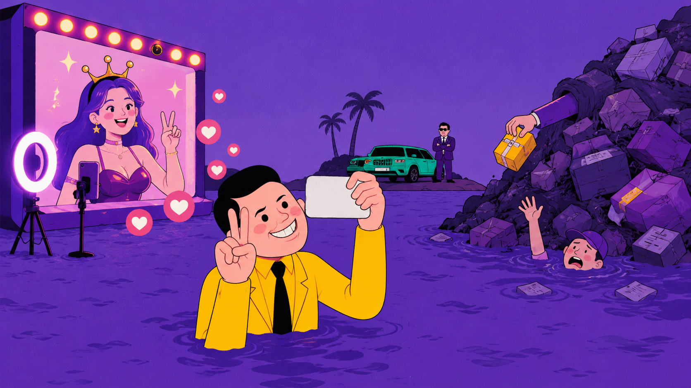
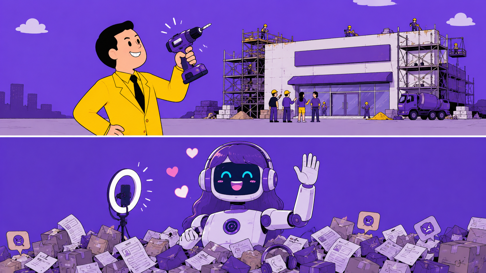
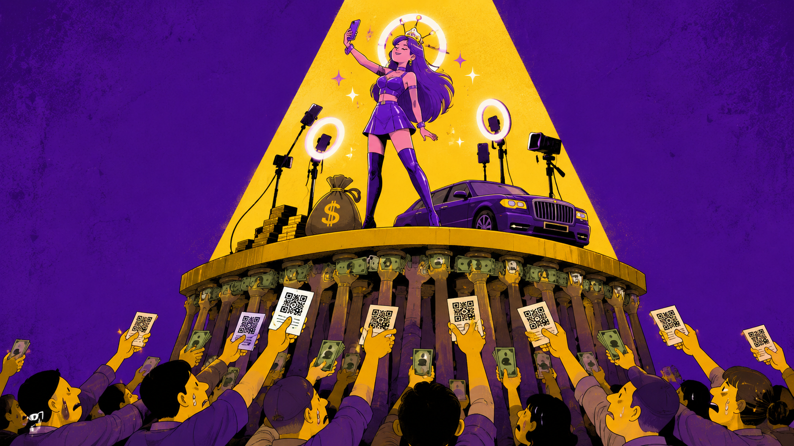

618 结束那天，我朋友圈出现了 14 个"数字人直播暴富"的封面。
最离谱的一个标题是："睡觉也能赚钱"。
我点进去看了。确实能——你睡觉，他赚钱。
前两年，数字人直播的标准话术是：不用露脸，不用开播，不用拍摄，一套系统自动赚钱。
结果到了 2026 年 618，真正跑出数据的不是"普通人挂机暴富"，而是平台里的商家工具。
公开报道里，JoyStreamer 在 618 开场 4 小时后，数字人开播商家同比增长 6 倍，带货成交额突破 7000 万元；此前这个服务已经累计服务超 7 万个商家。
这组数据很容易让人产生一种幻觉：
机会来了。
接着第二种幻觉也来了：
是不是终于可以不用露脸、不用熬夜、不用学直播，靠一个数字人替我把钱挣了？
我们就聊一个更朴素的问题：数字人直播现在到底能不能做？
答案很明确：
能做，但只适合按经营工具做，不适合按副业套利做。
如果你是有货、有店、有账号、有运营能力的商家，数字人直播可以是低峰补播、标准化讲解、客服导购、内容复用和人机协同工具。
如果你是普通人，手里没货、没账号、没运营、没投流、没售后，只是刷到"AI 无人直播副业课"，建议先把付款码收起来。
一句话总结：
数字人能帮商家省一点钱，不能帮普通人凭空变出生意。
这就好比：电钻确实能打孔，但你不能买把电钻就觉得自己能开装修公司。

普通人为什么会想做数字人直播？
因为这套话术太懂焦虑了。
这套组合拳打下来，打的不是技术需求，是你的钱包和智商的双重焦虑。
尤其这几年 AI 新闻天天天塌了。今天某模型重新定义生产力，明天某应用开启新时代，后天某发布会又让人类工作方式彻底改变。你要是不赶紧找个 AI 项目上车，好像就要被时代扔到路边捡瓶子。
这时候数字人直播就显得特别亲切。
AI 写代码你不一定会，AI 做科研你也插不上手，但直播带货你听得懂。带货、佣金、成交额、副业、躺赚，这几个词排在一起，看着就像离钱包很近。
"某些人"最懂这一点。
模拟一下卖课现场：
"兄弟，这个不需要你露脸。"
"嗯。"
"不需要你开播。"
"哦？"
"不需要你有货源。"
"真的？"
"那需要我有什么？"
"需要你有付款码。"
"……"
"以及，一颗相信奇迹的心。"
问题是，直播电商从来不是"播出来"就算赢，它是"卖出去"才算数。
工具把开播门槛打下来了，商业门槛还站在那里。
商家的需求就扎实得多。
他们不是突然想靠直播改变命运，他们只是想让现有生意跑得更顺一点。
数字人直播对商家最现实的价值，无非是这几件事：
商家已经有货、有店、有用户、有售后、有交易链路。数字人不是给他们凭空变出生意，而是嵌进已有生意里，帮他们干一部分重复活。
当然，上面都是有吹牛皮的成分，实际情况也不如讲的这么理想。
即使商家安排专人三班倒的陪着 AI 直播，在 AI 开始"胡言乱语"的时候，以"迅雷不及掩耳之势"冲过去按重启键。
商家也要做好买一批号然后被封一批号的准备，整体流程，操作起来远不像宣传的那般清爽。
这还不提投入的成本是不是真的靠长尾直播赚的回来。
商家真正想要的，不是"像真人"，而是"像员工，但别那么贵"。
问题是，便宜的员工通常干不了贵员工的活。AI 也一样。
数字人直播的商业问题，不是"技术能不能用"，而是：谁赚钱，谁付费，谁背风险。
最先更容易赚钱的，通常不是普通人，而是：
平台想要的是更多商家开播、更多交易机会，以及更多可治理的直播供给。

服务商能卖的东西就更多了：数字人 SaaS、声音克隆、形象定制、直播间搭建、代运营、课程、代理加盟，全都能收费。尤其当普通人相信"这是 AI 红利"以后，成交效率可能会非常可观。
只要算得清 ROI，能降低一部分人力成本，延长一部分有效开播时间，复用一部分内容资产，对商家来说，这就是正经工具。
但对普通人来说，情况往往正好反过来。
你付了课程费、系统费、代理费、素材费，钱先出去了。后面能不能起号，能不能卖货，会不会封号，投流亏不亏，售后谁管，违规谁背，退款能不能退，这些风险会慢慢都回到你身上。
先闭环的，往往是对方的商业模式，不一定是你的。
JoyStreamer 的 618 数据至少能说明一件事：数字人直播在平台工具、商家货盘、交易场景、合规路径同时存在时，可以被规模化使用。
但这个案例不能推出：
平台把路修好了，不代表你穿拖鞋也能跑马拉松。
真正更可复制的路径，是：
这条路径的关键词不是"无人"，而是"分工"。
最后，不可避免的问题又回到了人与 AI 如何协同。
所以真正能跑通的，不是把真人拿掉，而是把真人用在更值钱的地方。
相反，最危险的路径就是：普通人买系统、买代理、买躺赚叙事。
新华网 2025 年报道过多起数字人直播服务纠纷：加盟或购买系统后频繁被封禁，产品效果与演示差距大，使用几十分钟即被平台封禁，后续还有声音克隆、云存储、技术服务费等隐形收费，维权困难，退款周期长。
说狠一点，有些人以为自己买的是铲子，最后发现自己买的是挖坑教程。
铲子至少还能挖土。教程只能教你：坑就是这么深，跳吧。
我去年问过"某播"产品的销售："这会不会封号？"
他说："不会，我们客户都在播。"
我又问："那如果封了呢？"
他说："那是你操作不当。"
我再问："怎么算操作不当？"
他说："就是被封了的那种。"
数字人直播真正的边界，不是"能不能播"，而是四件事：
2025 年《人工智能生成合成内容标识办法》明确，AI 生成合成内容包括文本、图片、音频、视频、虚拟场景等，需要添加显式标识和隐式标识。
2026 年 2 月起施行的《直播电商监督管理办法》，进一步把数字人主播等人工智能生成内容纳入直播电商监管，要求使用人工智能生成的人物图像、视频从事直播电商活动时进行标识，并持续向消费者提示。
2026 年 4 月，网信部门已经对"剪映""猫箱""即梦AI"等未有效落实标识要求的平台采取约谈、责令改正、警告等措施。
重点不是"记得打个标签"。
重点是：以前很多人把 AI 标识当礼貌，现在它越来越像义务。
不同平台对数字人直播的态度并不一致。
所以问题不是"平台支不支持数字人"。
真正的问题是：你在哪个平台播，用什么工具播，有没有标识，有没有真人介入，有没有真实互动，有没有平台认可的合规路径。
平台不是反对数字人，平台是反对你乱来。
AI 可以提高讲解效率，也可以承担重复问答。
但问题是，信任这玩意儿，AI 自动生成不了。
毕竟，真到了需要"赔礼道歉"的时候，还得你这个真人上才行。
现在平台型数字人已经开始覆盖内容策划、商品讲解、实时互动、主动促单等流程。但"能互动"不等于"能独立经营"。
相信未来有一天，马斯克戴着脑机接口飞上火星，遍地都是可以翻跟头的机器人，数字人真的能帮你实现人在家中做，直播天上飞的梦想。
但那个时候，和咱们这种人更没有关系了，谁有供应链谁就能吃掉整个牌桌的筹码。

所以数字人直播能不能做？
能。
但只能按经营工具做，不能按副业套利做。
如果你是商家，它可以是低峰补播、标准化讲解、客服导购、内容复用和人机协同工具。
如果你是普通人，手里没有货，没有账号，没有直播运营经验，只是被"不露脸、低成本、自动赚钱"的叙事打动，那结论也很简单：
别一听到"无人直播"，就以为自己终于可以躺着赚钱。很多时候，躺着的是想象，交钱的是你。
如果你是 AI 产品经理或创业者，真正值得研究的不是"数字人像不像真人"。
而是：AI 能不能持续支撑一个真实垂直场景，并且让用户愿意持续付费。
数字人直播不是骗局。
但"普通人靠它躺赚"这个叙事，大概率是把你的焦虑包装成别人的产品。
别把 AI 当财神。
更别把自己做成 AI 产业链里的耗材。
毕竟，数字人永远热情，永远正确，永远不负责。
而你，得为自己负责。
谢谢你看完这篇文章，意见仅供参考。
架构：AI不练腿
生成：GPT-5.5
优化：Kimi K2.7
审校：AI不练腿
插图设计：GPT-5.5
资料配图：公开网络